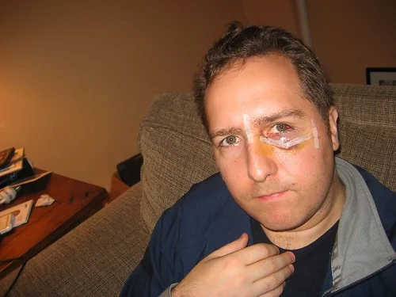

Surgery
Well, yesterday was an interesting day. I guess I should really start with that night, since I did whatever I could to keep myself busy, knowing that I was going in for surgery early in the morning. Obviously, I didn't really have that good a sleep, since I had a lot on my mind. 7am came pretty quicky, and I made my way down to the hospital for my 8am time. Despite them sending me multiple emails and leaving a few voice messages that I should be there at 8am, apparently at 7:45am, I was "late", and people seemed to be in a huff about that.. Not sure what that was about.
So, first thing they get me to do is change into those funky gowns. Some girl took me into the changing room and told me I had to strip naked and put them on, so I did. But I guess I was a little anxious, because she apparently meant for me to strip *after* she had left, but I was nearly buck naked when she left me. Oh well, what can I say -- I'm not used to this stuff.
Next thing they do is lead you into the pre-op waiting area. What's weird is that one by one, I'd see all the people show up who were in the outside waiting room earlier, now wearing the same great clothing I had on. They put you in these big reclining chairs, cover you with a blanket, give you a magazine if you want it, and leave you basically on your own until you get called for surgery. Now, this may seem like a good experience, but for me it was like being put in a sensory deprivation chamber. You can't really talk to anyone, and I didn't feel like reading, so I just sat looking at the clock most of the time. My original surgery time was at 9am, but I didn't get "the call" until around 1pm, so I had four hours to think about the surgery on my own. Not very fun.
However, I realized going to the bathroom in those gowns was pretty fun. Almost empowering. You just walk into the bathroom, do your job, and walk away. No unzipping. No pulling something down. Not a bad system really.
I was really greatful the nurses and doctors I met actually cared about their jobs. I've met a few in my time (even some of the ones that were helping my dad out in Chilliwack) who really take their job as a 9-5 type experience, not really caring about the people they're helping. The first really nice guy I met was the anesthesiologist. He was an older guy (which I liked, because I thought, hey this guy must know what he's doing). He went over my whole history with me, talked me through a few things, gave me a big smile, patted my leg, and said not to worry. It was really great how much stress he took out of me just by his confidence.
That reminds me of airline travel actually. I really don't like to fly. I avoid it when I can, and would rather drive to Seattle than fly there. However, I recognize to get anywhere remote I have to step on a plane and just get myself through it. And whenever I start to get a bit anxious on the plane or worried, I usually look to the pilots or the stewardesses and take some comfort in how calm they are -- these are people that fly multiple times per day usually, and they seem ok. So, the anesthesiologist was effectively my pilot on that flight, and from that point on I felt really calm when he was around.
Shortly after that I met the surgeon for the first time, Dr. Cam Bowman. Originally I was a bit worried about having surgery with a guy I had never met. I googled him a day or two ago, and this is what UBC wrote about him 8 years ago:
When Cam Bowman steps onstage at the Chan Centre to receive his medical degree, he'll be on familiar territory. Before entering UBC's Faculty of Medicine, Bowman spent 10 years as a keyboard player with the Juno-award winning band, Barney Bentall and the Legendary Hearts. A member of the medical students' choir, Bowman was also artistic director of the Spring Gala, an annual musical event performed by medical students. Bowman continues his creative ventures in his next gig -- a five-year residency in plastic surgery.
But besides for that I couldn't figure out too much about him. However, when I met him, I felt alot better. He had sort of a presence to him that most doctors don't have. I just felt like he knew what he was talking about. He explored my eye socket with his hands, asking me where it hurt, looking for step-deformities. We walked me through the procedure, and told me what to expect post-operatively (which he said would be a lot of bruising, some blood in my eye, and of course some discomfort around the incision site). They then said goodbye, and that they'd see me in a few minutes.
Finally a nursed wheeled me into operating room (OR) #10, sometime around 1:05pm. OR 10 was a big scary room with these huge alien looking lights covering the operating table. It was pretty freaky looking, and I don't remember seeing anything on TV like it. Suddenly I was in a big bright room with about 5 people, each doing their own task. There was a male nurse getting all the operating tools together (you could hear the clinking of stainless steel tools one by one). A female nurse was moving me onto the operating table and getting me hooked up to the monitors. The two plastic surgeons were over in the corner talking about hockey in front of my CT scans. And the anesthesiologist was right above me making sure I was ok.
Next thing I knew I had an IV in my arm, and the anesthesiologist was going over my vitals and talking me through everything. Finally he said "Note the time, 1:12pm. Ok Duane. I'm going to put you to sleep now. See you in recovery." I took one deep breath of oxygen from my mask, looked around and saw the OR, took another deep breath, looked around saw the OR. On the next deep breath, I looked around and realized I was actually in the recovery room. So, I guess that stuff works pretty good. Thankfully I don't remember anything from the surgery (which is a bit weird, because I went under general anesthetic for my wisdom teeth years ago, and I actually thought I could recall pieces of the surgery - minus the pain - when I woke up). Not this time.
Waking up after something like that is a bit weird. Once I got my bearings, I glanced up at the clock above my bed, and it was a little after 2:30pm, so the surgery wasn't actually that long. At that point I went through a little checklist in my head.
- Cover left eye. Can I see? Right eye still there. Go to step 2.
- Cover right eye. Can I see? Left eye still there. Go to next step 3.
- Lightly explore face with finger. Seem ok? Go to step 4.
- Try to sleep
And that's what I did. I woke up about 30 minutes later, in quite a bit of pain, but not enough to really make me super uncomfortable. The nurse finally asked me how the pain was, and I said it hurt more than I'm usually comforable with, so she gave me an injection into my IV of something that helped. Another 20 minutes later she asked how it was, and gave me one more shot. At that point, I felt pretty comfortable. I was really hungry at this point, having not had food or drink in about 24 hours. It didn't help that every once and a while someone walked down the hall with a full plate of cafeteria food.
They kept me for three hours after the surgery in a post-operative area. Some of my friends from the morning were there already when I got there, having gone through surgery themselves. I watched a few of them stroll in after I got there, everyone in their own little world of discomfort. I tried to sleep at this point, but I couldn't pull it off. My dad strolled up to me at around 4:30pm, and he looked relieved at how I looked, which obviously made me feel better (since I couldn't see myself). He snapped a photo on his cell phone so I could see, and admittedly, I looked a lot better than I thought I would based on their description of what I would be like post-operatively.
At around 5pm, they let me get up and walk with my IV thing down to the bathroom. Once they were comfortable that I wasn't feeling sick, they gave me my clothes, and let me go home. My dad took me back to my place, where my friend Jeff (who was nice enough to take a good part of the day off from work to be with me when I was done) was waiting to keep me company for a while. The first few hours I was a bit dizzy, but my dad went and got my some gravol to help. We ordered some chinese food and I finally got to eat again.
As I sat on the couch last night with my dad, I couldn't help but feel how far medicine has come in the last ten or twenty years. On the couch was a guy who recently had a heart attack, and another guy who had reconstructive surgery on his orbital cavity just hours before, both feeling pretty good, having a good time. We watched a movie, listened to a little music, and then I called it a night.
In terms of pain, I'm pretty good, having an ample supply of schedule II and schedule III narcotics at my side. I have to go back to St. Paul's this afternoon for a follow up visit with my Dr. If he likes the look of me I can start what I hope is my last recovery cycle here.
Here's a shot of me a few hours after getting home. Thankfully my eye now appears to be in its regularly scheduled position. Those white things on my face are sterile strips meant to keep the stitches from getting infected. As for the incision, it's placed along a natural groove in my face, so in theory, it shouldn't be that noticable once the stitches come out and it fades a bit. Plastic surgeons are really good at keeping stitches hardly noticable. This whole incision is actually just one long stitch (you can see the two ends being held in place by the sterile strip tape). When they come out, they will just pull one end and it will all unravel, leaving hardly anything behind.
 At home, post-operative
If anyone wants to compare that shot with how my left eye looked on Wednesday (at my graduation ceremony about 24 hours prior), click here.
So for those people out there debating whether or not to try getting kicked in the face sometime, I would have to recommend against it. But thankfully, this whole episode is nearly behind me. I was a bit bummed about missing Mexico originally, but I guess you can't really put a price on your health. Maybe I'll go with my original plan and see Hawaii when I'm better again, or maybe I can round up a few people in the new year and hit Mexico anyways. We'll see.
Thanks again to all the people who have helped me get through this.